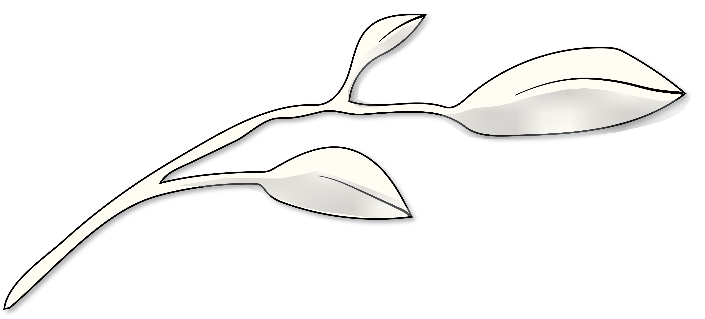
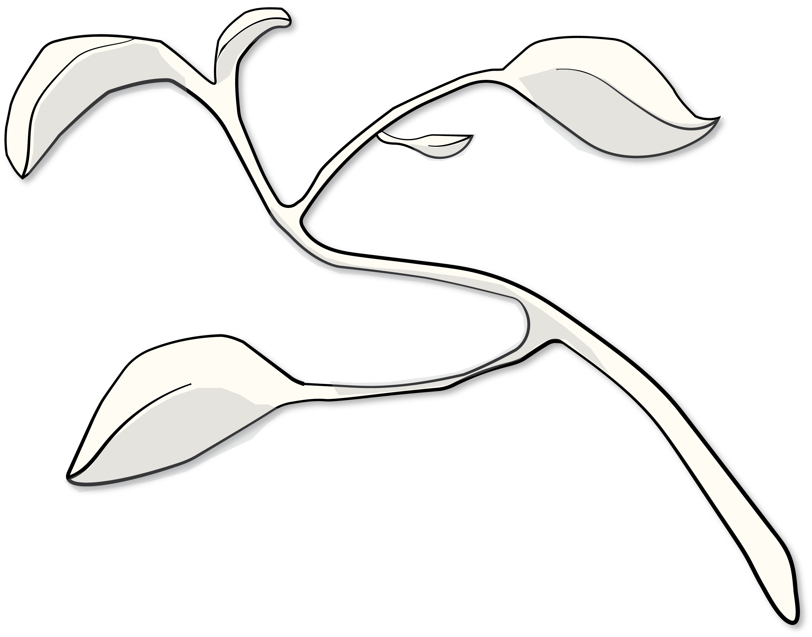

Climate Home Kit
Interactive Design
UI Design


Climate Home Kit
Interactive Design
UI Design

Student Housing and Dining
Marketing
Illustration

Cosmic Apple Calendar
Information Design
Illustration

Davis Data Driven Change
Editorial Design
Social Design